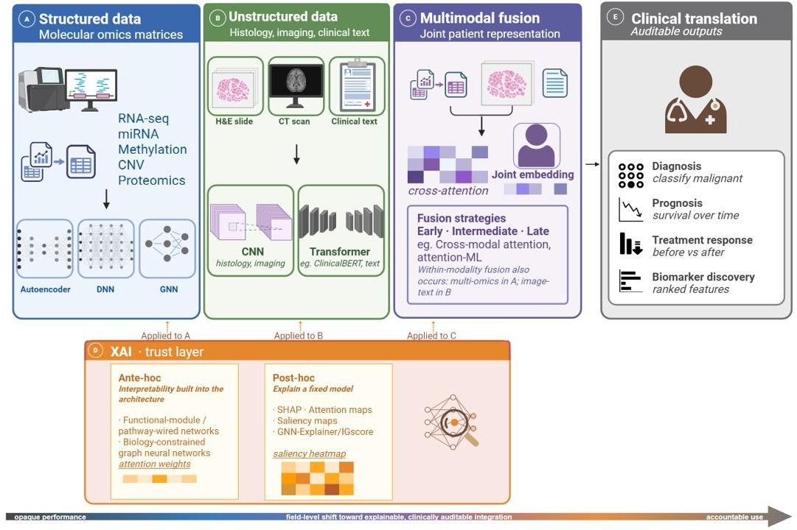

A review of deep learning and explainable AI for multimodal data integration in oncology. It argues that the real advance is not bigger models, but predictions that can be validated, explained, and trusted in the clinic.
Literature review · Deep learning · Explainable AI · 13 case studies · Colorectal, liver, pancreatic

Deep learning can already fuse molecular, image, and text data for cancer. The harder question is no longer accuracy. It is whether an integrated model can be validated, explained, and trusted enough to act on. The review makes that case across five stages: structured molecular data as the mature core, unstructured histology and text as the frontier, multimodal fusion as the meeting point, explainability as the trust layer, and clinical readiness as the real bottleneck.
I drew the whole argument as one figure, from raw data types through to the auditable outputs a clinician would actually use.
Figure 1. The review in one view. Structured, unstructured, and multimodal data feed an explainability layer, which converts predictions into diagnosis, prognosis, treatment-response, and biomarker-discovery outputs. Created with BioRender.
I read thirteen studies across colorectal, liver, and pancreatic cancer. Structured molecular data is the most developed setting, with external validation and interpretability built into the model. Unstructured histology, radiology, and text are the expanding frontier. Multimodal fusion is where they meet, and explainability is the layer that turns an accurate prediction into evidence a clinician can question rather than simply accept.
Across the studies, three things keep these models out of the clinic: validation on a single cohort, uneven use of explanation methods, and the gap to real workflows. One review found that only three of twenty-one pancreatic-cancer studies used any explanation method at all. The review argues that progress now depends on making integrated models accountable, not larger. The full review, the thirteen-study table, and the references are in the repository.